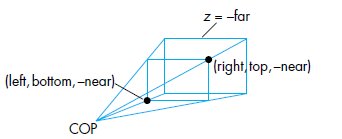

工欲善其事，必先利其器。
在以前的三维空间中，我们常常用向量v=(x,y,z)T 表示一个点，或者一个向量。
其中，为什么能表示一个点呢？其实我们省略了一个前提假设：坐标系原点是0。
对于点（用大写字母表示）和向量（用小写加粗字母表示），其实它们之间可以进行运算。原先 向量集合 和 向量间的运算 构成了 向量空间（vector space） ，现在想办法把点也加进去。
例子很好理解，譬如：
P+vP−QP−Q+v
第一个表示点加向量等于点，第二个表示两个点相减等于向量，第三个表示点减点加向量等于向量。很显然，只需要把点当作 1，向量当作 0，然后做加减法。如果结果是 1 那么就是点，如果结果是 0 就是向量，否则就是不合法的运算。
那么根据这个性质，我们就可以尝试拓展 向量空间 。
定义：我们定义一个三维欧氏空间的坐标系形如：
b=⎝⎜⎜⎜⎛e1e2e3O⎠⎟⎟⎟⎞
其中，e1,e2,e3 为基向量，O 为原点。这个坐标系可以完整表述空间里的所有点和向量。
注意，我们不要去考虑e1,e2,e3,O 具体等于什么，它就是一个符号。如果你尝试去设e1=(1,0,0)T 实际上已经在做坐标变换了，变换到i^,j^,k^ 的坐标系去了，那么i^,j^,k^ 又等于什么呢？这样下去将无止尽。所以我们现在就把它们当作一个符号。
那什么是数字呢？坐标是数字。
考虑空间中的一个点，它一定形如：
P=O+a1e1+a2e2+a3e3=(a1a2a31)⎝⎜⎜⎜⎛e1e2e3O⎠⎟⎟⎟⎞=aTb
其中，那个a 就是点P 的坐标，是一个四维的实数向量，特点是第四维为 1。
稍微聪明一点也可以知道，向量也可以用这种方式表示，只不过第四维为 0，因为它不需要加上个原点O，向量不需要绝对位置，只需要方向和大小。
总结：向量和点都有坐标，坐标是一个实数向量，向量的坐标第四维为 0，点的坐标第四维为 1。
当然，后面为了透视矩阵，我们可能扩展齐次坐标，使得第四维可以为任何数。
处理了其次坐标，我们下面来看仿射变换。
我理解的仿射变换本质上就是在做坐标系间的线性变换 + 平移:
相较普通的线性变换，可以看到坐标系原点被平移了。考虑上图两个坐标系b,b′ 满足：
b=(e1e2e3O)Tb′=(e1′e2′e3′O′)T
假设存在坐标系间的变换关系：
⎩⎪⎪⎪⎪⎨⎪⎪⎪⎪⎧e1′=u1e1+u2e2+u3e3e2′=v1e1+v2e2+v3e3e3′=w1e1+w2e2+w3e3O′=O+p1e1+p2e2+p3e3
即向量e1′,e2′,e3′ 和点O′ 在坐标系b 中都应该有个坐标，分别为u,v,w,p。那么，我们可以得到：
⎝⎜⎜⎜⎛e1′e2′e3′O′⎠⎟⎟⎟⎞=⎝⎜⎜⎜⎛u1v1w1p1u2v2w2p2u3v3w3p30001⎠⎟⎟⎟⎞⎝⎜⎜⎜⎛e1e2e3O⎠⎟⎟⎟⎞
即b′=Mb。这就是仿射变换。仿射变换只有 12 个自由度。
只有在第四维被扩展后，才可能有更多的矩阵形式，但是自由度仍为 12 个。
我们还需要考虑坐标在该变化下的变化。考虑有一个点或一个向量，他在坐标系b 下的坐标为u，而在坐标系b′ 下的坐标为v，即：
uTb=vTb′
故有：
uTb=vTb′=vTMb
故有坐标变换：
v=(MT)−1u
而MT 的最后一行为(0,0,0,1)，也是我们更常见的仿射变化形式。
# 基本的仿射变换：平移 (translation)、旋转 (rotation)、缩放 (scaling)
这部分简写，纯做记录。
- 平移向量(x,y,z)T
T(x,y,z)=⎝⎜⎜⎜⎛100010001xyz1⎠⎟⎟⎟⎞
- 沿着向量(x,y,z)T 进行缩放，缩放比例是向量模长
S(x,y,z)=⎝⎜⎜⎜⎛x000y000z0001⎠⎟⎟⎟⎞
- 旋转只有绕y 轴比较特殊，因为只有x×z=−y，所以旋转方向应取反。
Rx(θ)=⎝⎜⎜⎜⎛1000cosθsinθ0−sinθcosθ0001⎠⎟⎟⎟⎞
Ry(θ)=⎝⎜⎜⎜⎛cosθ0−sinθ010sinθ0cosθ0001⎠⎟⎟⎟⎞
Rz(θ)=⎝⎜⎜⎜⎛cosθsinθ0−sinθcosθ00010001⎠⎟⎟⎟⎞
这部分要讨论几个重点话题：
- 一切仿射变化都可以由上述三种变化组合而成。
首先我们可以不考虑平移（即矩阵最后一列不为 0），因为我们总可以平移到坐标原点，再平移回去。那么我们只需要考虑在普通坐标系下（即 3 维矩阵）时，所有变换都可以表示为旋转和缩放的组合，这句话对应的代数定理就是奇异值分解：
对于任意一个3×3 的实数矩阵M，存在奇异值分解：M=UΣVT
其中，U 和V 都是正交矩阵 (UTU=UUT=VTV=VVT=I)，Σ 是对角矩阵。网上有个图片比较常见：
它说明正交矩阵就对应了旋转变换，而对角矩阵就对应了缩放变换。然而这并不完全正确。
对于一个正交矩阵A (正交矩阵∣A∣2=1)，若∣A∣=1 则它是一个旋转变换，但当∣A∣=−1 时，它还有镜象的作用。
但是对于缩放变换，当缩放向量中有一维是负数时，它就有镜象的作用。譬如S(1,−1,1) 就是关于xOz 平面镜像。
故奇异值分解本质严格来说，应该是任何变换都是旋转、镜象和缩放的组合，不过镜象也是缩放中的一种特殊情况。
- 绕任意轴旋转矩阵的推导。
绕一个单位轴n^ 旋转θ 角度。我们的基本策略是：将物体和旋转轴一起旋转，然后把旋转轴转到与z 轴重合后，作用Rz(θ)，然后再转回原样。即：Rn^(θ)=Rx(−θx)Ry(−θy)Rz(θ)Ry(θy)Rx(θx)
然后我们尝试计算θx，就是把n^ 旋转到xOz 平面上，就等于把n^ 在yOz 平面上的投影旋转到z 轴：
然后θy 就是旋转到xOz 平面后，由于绕x 轴旋转故x 轴分量大小不变，然后旋转到z 轴：
所以有：Rx(θx)=⎝⎜⎜⎜⎜⎛1000nz2+ny2nznz2+ny2ny0nz2+ny2−nynz2+ny2nz0001⎠⎟⎟⎟⎟⎞Ry(θy)=⎝⎜⎜⎜⎜⎜⎛nz2+ny20nx010−nx0nz2+ny20001⎠⎟⎟⎟⎟⎟⎞
至此推导完毕。
- 剪切变换（Shear）
它不是一种基础变换，但也很重要（在后面投影和透视中）：
剪切变换的矩阵形式：Hx(θ)=⎝⎜⎜⎜⎛100cotθ100010001⎠⎟⎟⎟⎞
# 物体的观察 (Viewing)
我们必须理解清楚一个物体是怎样变换到摄像机胶片上的：
- 物体在现实中有一个世界坐标，这个坐标独立于观测者，表示了物体现实中的位置。然后物体自身姿态的平移、旋转变换都应在这个坐标系中首先进行。
- 当物体自身不再变化，我们就可以观测它。第一步就是把物体从世界坐标系转化为观察坐标系。即我们摄像机也确定了一个坐标系。这一步的目的是把观测者放到原点，把物体放到坐标轴上：
- 根据摄像机的参数 (透视还是正交投影，视角范围多大) 确定观测范围 (view volumn)，把范围外的部分剪裁掉 (clipping)。
- 最后把观测范围内的物体投影到胶片 (一个矩形，认为是投影平面) 上。
其中，第 1、2、4 步都可以用矩阵运算描述，第 3 步是三角片剪裁算法，这里不做讨论。第 1、2 步的矩阵对应了 Model-view 矩阵，而第四步则是 Projection 矩阵。
- 第一步的矩阵可以根据你想要物体是什么姿态来决定。
- 第二步的矩阵就是在第一部分我们讨论的仿射变化的本质：即坐标系的变换。我们可以把坐标都变换到摄像机坐标系下，当然，摄像机确定的坐标系常用摄像机位置 (点)，摄像机朝向 (向量)，** 摄像机上轴 (向量)** 唯一确定。
确定了从哪个坐标轴变换到哪个坐标轴，就可以方便地进行坐标变换，这部分对应了 GL 库中的 lookAt 函数。其实这个函数就是实现了一个坐标变换，矩阵形式也较好推导。

- 第四步的投影矩阵是我们重点讨论对象。可分为平行光投影和透视投影两种。
其中，两种投影又可以细分为正投影和斜投影。
# 平行光投影
# 正投影
顾名思义，这种投影方式特点为：光束平行，且与投影平面垂直。俯视图为：
对于这种投影，我们认为摄像机的观测范围为一个长方体。
其实它的投影矩阵很简单，譬如如果透视平面是z=0，那么矩阵就为：
Morth=⎝⎜⎜⎜⎛1000010000000001⎠⎟⎟⎟⎞
就是把z 分量扔掉。然而在 OpenGL 或 WebGL 中，我们往往认为摄像机有一个观测范围。在正平行光投影下，这个观测范围就是一个长方体：
然后实际上在剪裁掉物体长方体外的部分后，其实需要把这个长方体连同里面的物体一起变换到一个边长为 2 的正方体，然后再作用M 进行正平行投影：
这个变换到单位正方体的变换也很简单，就是先平移到原点，然后缩放到单位正方体：
T(−2left+right,−2top+bottom,−2far+near)S(right−left2,top−bottom2,far−near2)
所以正投影的最终的矩阵就是：
projectionMatrix=Morth×S×T
# 斜投影
斜投影的特点是：光束平行，但与投影平面不垂直。俯视图为：
这样摄像机的观测范围就成了一个平行六面体：
它的观测过程实际上就是先做一个剪切变换，再做一个正平行投影（注意是剪切而不是平移！很显然斜投影会导致物体形变）:
而这个剪切变换是沿着x,y 轴做的。假设光线和x,y 轴正半轴夹角为θ,ϕ：
则有剪切变换：
H(θ,ϕ)=⎝⎜⎜⎜⎛100010cotθcotϕ10001⎠⎟⎟⎟⎞
所以斜投影的最终矩阵就是：
projectionMatrix=Morth×S×T×H
# 透视投影
这部分我们只讨论斜投影的情况，因为正投影实际上就是去掉一个剪切变换的H 矩阵。
- 首先，消失点 (COP)，投影平面 (这里也是 viewing plane) 和观测范围如下图所示：
可见观测范围是一个梯形体。我们首先也还是作一个剪切变化，把z=−far 和z=−near 两矩形的中心剪切到坐标轴上，形式化地：

我们要把点(2left+right,2top+bottom,−near) 剪切到(0,0,−near)。
(其中为什么是−near 是因为z 轴其实是垂直屏幕向外，而我们希望观测范围在屏幕内部，所以若near,far>0 则−near,−far 都在z 轴负半轴的话就在屏幕内侧了。)
这个剪切变换的矩阵为：
H(cot−1−2∗nearleft+right,cot−1−2∗neartop+bottom)=⎝⎜⎜⎜⎛100010−2∗nearleft+right−2∗neartop+bottom10001⎠⎟⎟⎟⎞
- 下一步，我们用缩放变换（沿x,y 轴），把这个梯形体规整成一个每个切面都是一个正方形的梯形体，对任意z，使得x,y 的范围都是[z,−z]（注意是z 轴负半轴，故z<0）。这个缩放变换的矩阵为：
S(right−left−2∗near,top−bottom−2∗near,1)
- 然后最重要的一步来了，我们要有一个 Perspective normalization 的矩阵，它的作用是把规整后的梯形体，仿射变换成一个边长为 2 的正方形：
为了做到这一点，我们需要扩展 齐次坐标 ，使得其第四维可以不只是 0 或 1，扩展方式为：
⎝⎜⎜⎜⎛xyzw⎠⎟⎟⎟⎞=⎝⎜⎜⎜⎛x/wy/wz/w1⎠⎟⎟⎟⎞
即w 不为 0 时，都可以表示点，且一个点此时就有无穷多个不同的坐标。这样做有什么好处呢？我们考虑如下形式的矩阵，注意它的第四行已经不全为 0，所以作用的是扩展后的齐次坐标：
N=⎝⎜⎜⎜⎛1000010000α−100β0⎠⎟⎟⎟⎞
我们看它作用于某个点时：
N⎝⎜⎜⎜⎛xyz1⎠⎟⎟⎟⎞=⎝⎜⎜⎜⎛xyαz+β−z⎠⎟⎟⎟⎞=⎝⎜⎜⎜⎛−x/z−y/z−(α+β/z)1⎠⎟⎟⎟⎞
为什么我们要用−1 乘出来是−z 呢？之前提到，因为整个观测范围都在屏幕内测，故都是z 的负半轴，故z 值都是负的。所以取−z 相当于取了个z 的绝对值。
然后显然−x/z,−y/z 的范围都是[−1,1] 了就，我们希望−(α+β/z) 的范围也是[−1,1]，那么就可以取：
α=−near−farnear+farβ=−near−far2∗near∗far
最终得到了 Perspective normalization 的矩阵：
N=⎝⎜⎜⎜⎛1000010000near−farnear+far−100near−far2∗near∗far0⎠⎟⎟⎟⎞
- 最后，我们得到了个边长为 2，中心在原点的正方体。然后我们做一个正平行投影Morth 即可。
故最终的投影矩阵为：
projectionMatrix=Morth×N×S×H